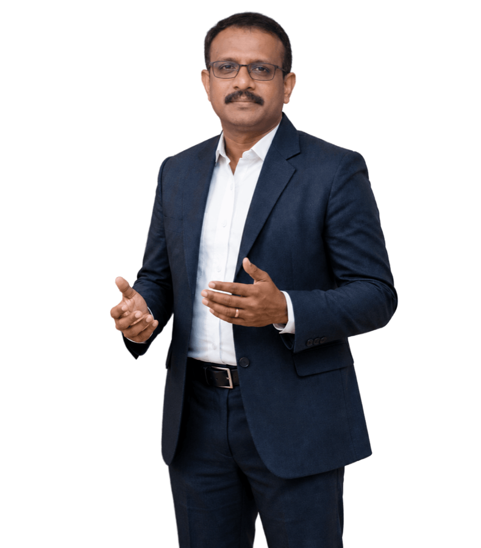

Academic excellence
Outcome-based education with continuous curriculum evolution aligned to industry and global standards.
Institutional leadership
Dr. Sreekanth S. V. — Director, LEAD College (Autonomous). Alumnus, IIM Ahmedabad · Doctorate, Symbiosis International University.

The Office of the Director
The Director provides the strategic vision and overall leadership for LEAD College, ensuring that the institution remains aligned with its mission of developing ethical, industry-ready and socially responsible leaders.
The office oversees academic excellence, institutional growth, industry partnerships, global collaborations and the integration of innovation into learning. With a strong focus on outcome-based education and employability, the Director guides the college toward continuous academic and institutional advancement.
Strategic framework
Core priorities that support the academic experience and institutional mission.
Outcome-based education with continuous curriculum evolution aligned to industry and global standards.
Strategic planning that ensures sustainable expansion of programmes, infrastructure and institutional reach.
Deep collaborations with corporates, startups and public institutions to bridge education with employment.
International academic ties that bring global perspectives into the campus learning ecosystem.
Embedding entrepreneurship, digital literacy and emerging technology across all academic programmes.
Embedding empathy, ethics and community engagement as foundational dimensions of leadership formation.
Director’s communication